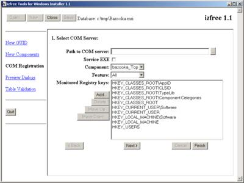
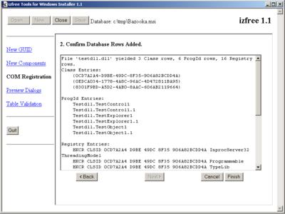
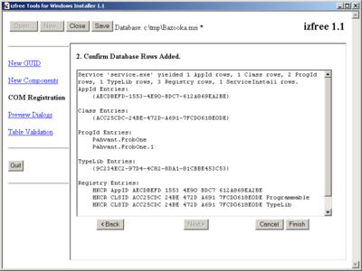

This tutorial assumes that the reader is familiar with COM, but not necessarily familiar with how Windows Installer registers COM objects. For more information about COM, see the Platform SDK documentation.
COM objects are reusable bits of software distributed in binary form. COM objects register themselves with the system to make themselves accessible to applications. Registration is the process of writing data to the system registry that identifies the location of the COM object's executable file and its properties.
COM objects installed by an application need to be registered on the target machine. Similarly, the registration information must be removed when the object itself is removed. Windows Installer provides several tables for recording the registration information for a COM object.
The Class, ProgId, TypeLib, AppId, Extension, Registry, Verb, and MIME tables provide for the registration of COM objects. There is quite a bit of information in those tables, and its quite tedious to enter it all by hand. However, doing so at least once will make you familiar with the purpose of all the tables and how they are used in your installation. This understanding is invaluable in debugging COM registration problems.
izfree uses a COM object to generate new GUIDs for use with
Windows Installer. This tutorial will use izfree's installation and
registration of this COM object, in guidgen.dll, as an
example. The Zoom application used in other tutorials does not
contain any COM objects.
First, let's take a look at manually registering a COM object forsome concrete examples with the COM related tables.
First, gather the necessary registration information for your
code. This involves at a minimum your object's CLSID information under
HKEY_CLASSES_ROOT\CLSID\{your guid}
when the object is registered. If the component is not registered, then
you will have to extract the necessary information from your source code
or documentation. Information under your object's CLSID is entered into
corresdonding entries in the Class table. Make a note
of any information that you haven't yet entered into the class table
for later.
izfree's Class table has this entry for the GUID generator object. The AppId_, FileTypeMask, Icon_, IconIndex, DefInprocHandler, Argument, and Attributes columns are NULL.
| CLSID | {186D8B3C-C050-4F03-BC33-64B24FEAE4A1} |
|---|---|
| Context | InprocServer32 |
| Component_ | guidgen.dll |
| ProgId_Default | Guidgen.Generator.1 |
| Description | GUID Generator |
| Feature_ | guidgen.dll |
guidgen has a default ProgId specified in the Class table. Its ProgId information also needs to be entered into the ProgId table. First, the version-dependent ProgId is associated with its specific COM server. guidgen's version-dependent ProgId has this entry in the ProgId table:
| ProgId | Guidgen.Generator.1 |
|---|---|
| ProgId_Parent | NULL |
| Class_ | {186D8B3C-C050-4F03-BC33-64B24FEAE4A1} |
| Description | GUID Generator |
| Icon_ | NULL |
| IconIndex | NULL |
The version-independent ProgId for guidgen has this entry in the ProgId table:
| ProgId | Guidgen.Generator |
|---|---|
| ProgId_Parent | Guidgen.Generator.1 |
| Class_ | {186D8B3C-C050-4F03-BC33-64B24FEAE4A1} |
| Description | GUID Generator |
| Icon_ | NULL |
| IconIndex | NULL |
guidgen is a scriptable object and needs its type library
registered to register its interfaces and provide type information to
scripting development tools. guidgen's type library is compiled into
its executable, guidgen.dll. The type library can be
registered when the guidgen component is installed by adding the
following row to the TypeLib table:
| LibID | {699E2EC2-F86C-4360-BA1E-F01DD5AA5BAC} |
|---|---|
| Language | 0 |
| Component_ | guidgen.dll |
| Version | 256 |
| Description | guidgen 1.0 Type Library |
| Directory_ | NULL |
| Feature_ | guidgen.dll |
| Cost | NULL |
The LibID column gives the GUID for the type library. You will need to extract this from the registration information for your COM object. The Version column encodes the major and minor versions as major*256 + minor.
Finally, additional information about the COM server may need
to be written into the registry. Not every COM registry key is
directly supported by a Windows Installer database table. Take the
list of registration information you created in step 1, and cross off
every bit of registration information that has already been accounted
for by the Class, ProgId, and
TypeLib tables.
In the case of guidgen, it has the a ThreadingModel
setting, a Programmable component category and a type
library setting.
These settings are entered into the Registry table with the following rows:
| Registry |
HKCR_CLSID_guidgen.dll_InprocServer32
|
|---|---|
| Root |
0
|
| Key |
CLSID\{186D8B3C-C050-4F03-BC33-64B24FEAE4A1}\InprocServer32
|
| Name |
ThreadingModel
|
| Value |
Apartment
|
| Component_ |
guidgen.dll
|
| Registry |
HKCR_CLSID_guidgen.dll_Programmable
|
|---|---|
| Root |
0
|
| Key |
CLSID\{186D8B3C-C050-4F03-BC33-64B24FEAE4A1}\Programmable
|
| Name | NULL |
| Value | NULL |
| Component_ |
guidgen.dll
|
| Registry |
HKCR_CLSID_guidgen.dll_TypeLib
|
|---|---|
| Root |
0
|
| Key |
CLSID\{186D8B3C-C050-4F03-BC33-64B24FEAE4A1}\TypeLib
|
| Name | NULL |
| Value |
{699E2EC2-F86C-4360-BA1E-F01DD5AA5BAC}
|
| Component_ |
guidgen.dll
|
The keys in the Registry column only have the requirement that they be unique. Here, keys were chosen to be semantically meaningful to a human reader.
guidgen doesn't provide any new file types, so there are no entries in the Extension, MIME or Verb tables. Similarly, guidgen is meant to be used as a local inproc server only, not as a distributed application server, so it has no entries in the AppId table.
Validate the database and correct any mistakes made in editing before saving your modified database.
Repeat each of these steps for each object that you need to register.
Now that you have an understanding of the kind of data written intothe COM-related tables, let's take a look at how izfree 1.1 can automatethis for us. izfree 1.1 can automatically extract COM registration information from self-registering COM objects. Most COM objects are self-registering, which means that they can be asked to record their own registration information on the target system. When a COM object self-registers, Windows Installer cannot provide advanced features such as self-repair or advertisement.
izfree takes a small snapshot of the system and then asks the COM object to register itself. After the registration has completed, izfree compares the system's state after the registration with that taken in the snapshot. The differences between the system before and after self-registration are used to populate the COM-related tables.
izfree 1.1 will also notice actions taken on services during self-registration and will use that information to populate the ServiceControl and ServiceInstall tables.
The COM registration tool in izfree 1.1 assumes that the COM object'sfile and component has already been incorporated into the database. This can be done manually or with izfree's new component tool.
This example will use a fictitious program called 'Bazooka'
that contains two COM objects. The first COM object is a DLL server called
testdll.dll and the second COM object is an EXE server called
service.exe. service.exe is a Windows NT service
EXE created with ATL. When the ATL AppWizard creates a service EXE project,it inserts code to create the service in the self-registration code for the
EXE.
Launch izfree and open a database that has been prepared withFile and Component table entries for your COM object.
Select the COM registration tool. The following form is displayed.
|  | 17K PNG, 71K JPEG |
Enter the location of the COM server from which registration informationis to be extracted. If the COM server is a service, check the Service EXEcheckbox. Select a feature and component with which this COM server isassociated. If you created the entries with izfree, the name of theappropriate feature and component will contain the filename of theserver.
Usually you will not need to edit the list of monitored registry keys.By default izfree monitors all the important registry keys for COM objectregistration as well as typical keys used to record other applicationconfiguration information. If izfree misses some information from yourobject's self-registration process, you can add additional registry keysto the list.
Click 'Next' to advance to the next step in the wizard sequence.izfree will self-register your COM server and extract the registration information. A summary of the extracted information will be displayed.
|  | K PNG, K JPEG |
If it looks like something from the registration was missed based on the summary information, you can go back to the first page of the COM registration wizard sequence and add additional registry keys in order to capture the necessary information.
When you are satisfied with the information that has been extracted, click the 'Finish' button to add the extracted information to the database.
Repeat the process for any additional COM servers in your project. In this example, we repeat the process for the service EXE and note that a record in the ServiceInstall table was extracted.
|  | K PNG, K JPEG |
Save the changes to your database and exit izfree. Open your database in Orca to validate the added information. The database should validate without errors.
As you can see, izfree 1.1 makes this process much simpler than doingit by hand. Advanced uses of COM may still require that you understandthe COM-related database tables for fine tuning of the basics provided byizfree.
{kind=link}
{kind=link}
{kind=link}
{kind=link}
{kind=link}
{kind=link}